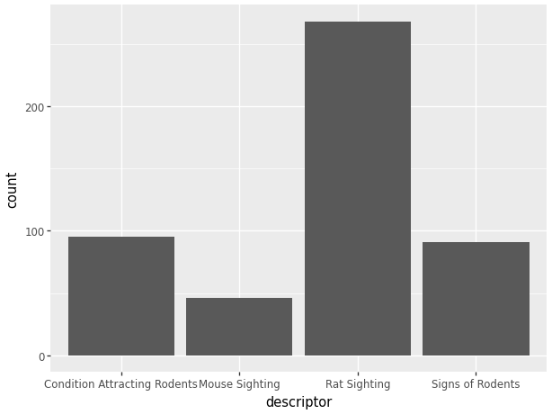
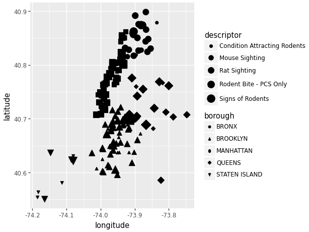
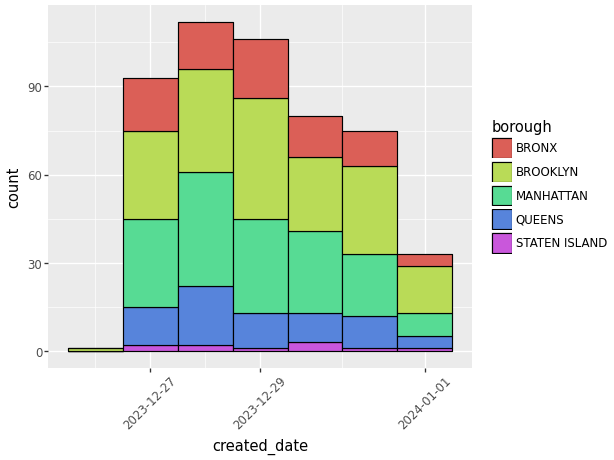
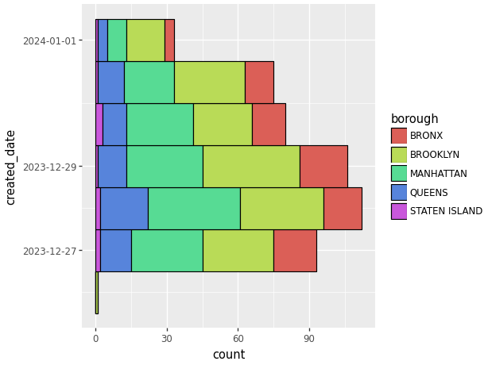
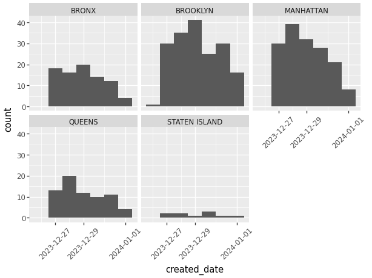
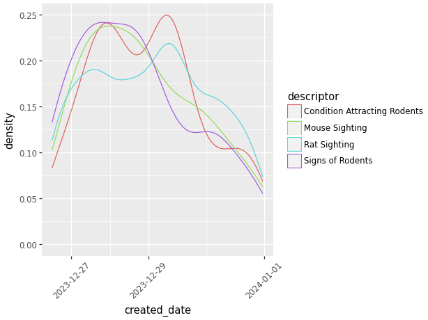

import matplotlib.pyplot as plt
import numpy as np
import pandas as pd
import seaborn as sns8 Visualization
9 Data Visualization
url = 'https://raw.githubusercontent.com/JoannaWuWeijia/Data_Store_WWJ/main/cleaning_data_rodent3.csv'
df = pd.read_csv(url)9.1 Introduction
Hi Class, my name is Weijia Wu and I’m a senior double majored in Applied Math and Statistics. The following shows a basic concepts of data visulization in python.
9.2 Matplotlib
Matplotlib is a desktop plotting package designed for plotting and arranging data visually in Python, usually in two-dimensional. It was created by Dr. John Hunter in 2003 as an alternative to Matlab to facilitate scientific computation and data visualization in Python.
Matplotlib is widely used because of its simplicity and effectiveness.
9.2.1 Installation of Matplotlib
The library can be installed by typing pip install matplotlib in your terminal
pip install matplotlib9.2.2 Line Plot
9.2.2.1 Single plot with pyplot submodule
Let’s Start with an sample Line Plot example:
t = range(0, 10)
r = [i**2 for i in t]
plt.figure(figsize=(4, 4))
# Width and height in inches
plt.plot(t, r)
plt.title('Line Plot Example')
plt.show()9.2.2.2 x-label, y-label, and grid:
plt.figure(figsize=(4, 4))
plt.plot(t, r)
plt.title('Line Plot Example2')
plt.xlabel('t value')
plt.ylabel('r value')
plt.grid(True)9.2.2.3 Add legend:
plt.figure(figsize=(4, 4))
plt.plot(t, r)
plt.title('Line Plot Example3')
plt.xlabel('t value')
plt.ylabel('r value')
plt.grid(True)
plt.legend()No artists with labels found to put in legend. Note that artists whose label start with an underscore are ignored when legend() is called with no argument.
To add a legend to a plot in Matplotlib, you can use the legend() function.
A legend is a small area on the plot that describes each element of the graph.
To effectively use the legend, you typically need to label the elements of the plot that you want to appear in the legend using the label parameter when plotting them.
plt.legend(loc='lower right', title='Legend Title', fontsize='small')No artists with labels found to put in legend. Note that artists whose label start with an underscore are ignored when legend() is called with no argument.
The help(plt.legend) command in Python is used to display the documentation for the legend function from the Matplotlib library. This documentation includes a description of what the function does, the parameters it accepts, and other relevant information such as return values and examples of how to use the function.
help(plt.legend)Help on function legend in module matplotlib.pyplot:
legend(*args, **kwargs)
Place a legend on the Axes.
Call signatures::
legend()
legend(handles, labels)
legend(handles=handles)
legend(labels)
The call signatures correspond to the following different ways to use
this method:
**1. Automatic detection of elements to be shown in the legend**
The elements to be added to the legend are automatically determined,
when you do not pass in any extra arguments.
In this case, the labels are taken from the artist. You can specify
them either at artist creation or by calling the
:meth:`~.Artist.set_label` method on the artist::
ax.plot([1, 2, 3], label='Inline label')
ax.legend()
or::
line, = ax.plot([1, 2, 3])
line.set_label('Label via method')
ax.legend()
.. note::
Specific artists can be excluded from the automatic legend element
selection by using a label starting with an underscore, "_".
A string starting with an underscore is the default label for all
artists, so calling `.Axes.legend` without any arguments and
without setting the labels manually will result in no legend being
drawn.
**2. Explicitly listing the artists and labels in the legend**
For full control of which artists have a legend entry, it is possible
to pass an iterable of legend artists followed by an iterable of
legend labels respectively::
ax.legend([line1, line2, line3], ['label1', 'label2', 'label3'])
**3. Explicitly listing the artists in the legend**
This is similar to 2, but the labels are taken from the artists'
label properties. Example::
line1, = ax.plot([1, 2, 3], label='label1')
line2, = ax.plot([1, 2, 3], label='label2')
ax.legend(handles=[line1, line2])
**4. Labeling existing plot elements**
.. admonition:: Discouraged
This call signature is discouraged, because the relation between
plot elements and labels is only implicit by their order and can
easily be mixed up.
To make a legend for all artists on an Axes, call this function with
an iterable of strings, one for each legend item. For example::
ax.plot([1, 2, 3])
ax.plot([5, 6, 7])
ax.legend(['First line', 'Second line'])
Parameters
----------
handles : sequence of `.Artist`, optional
A list of Artists (lines, patches) to be added to the legend.
Use this together with *labels*, if you need full control on what
is shown in the legend and the automatic mechanism described above
is not sufficient.
The length of handles and labels should be the same in this
case. If they are not, they are truncated to the smaller length.
labels : list of str, optional
A list of labels to show next to the artists.
Use this together with *handles*, if you need full control on what
is shown in the legend and the automatic mechanism described above
is not sufficient.
Returns
-------
`~matplotlib.legend.Legend`
Other Parameters
----------------
loc : str or pair of floats, default: :rc:`legend.loc` ('best' for axes, 'upper right' for figures)
The location of the legend.
The strings
``'upper left', 'upper right', 'lower left', 'lower right'``
place the legend at the corresponding corner of the axes/figure.
The strings
``'upper center', 'lower center', 'center left', 'center right'``
place the legend at the center of the corresponding edge of the
axes/figure.
The string ``'center'`` places the legend at the center of the axes/figure.
The string ``'best'`` places the legend at the location, among the nine
locations defined so far, with the minimum overlap with other drawn
artists. This option can be quite slow for plots with large amounts of
data; your plotting speed may benefit from providing a specific location.
The location can also be a 2-tuple giving the coordinates of the lower-left
corner of the legend in axes coordinates (in which case *bbox_to_anchor*
will be ignored).
For back-compatibility, ``'center right'`` (but no other location) can also
be spelled ``'right'``, and each "string" locations can also be given as a
numeric value:
=============== =============
Location String Location Code
=============== =============
'best' 0
'upper right' 1
'upper left' 2
'lower left' 3
'lower right' 4
'right' 5
'center left' 6
'center right' 7
'lower center' 8
'upper center' 9
'center' 10
=============== =============
bbox_to_anchor : `.BboxBase`, 2-tuple, or 4-tuple of floats
Box that is used to position the legend in conjunction with *loc*.
Defaults to `axes.bbox` (if called as a method to `.Axes.legend`) or
`figure.bbox` (if `.Figure.legend`). This argument allows arbitrary
placement of the legend.
Bbox coordinates are interpreted in the coordinate system given by
*bbox_transform*, with the default transform
Axes or Figure coordinates, depending on which ``legend`` is called.
If a 4-tuple or `.BboxBase` is given, then it specifies the bbox
``(x, y, width, height)`` that the legend is placed in.
To put the legend in the best location in the bottom right
quadrant of the axes (or figure)::
loc='best', bbox_to_anchor=(0.5, 0., 0.5, 0.5)
A 2-tuple ``(x, y)`` places the corner of the legend specified by *loc* at
x, y. For example, to put the legend's upper right-hand corner in the
center of the axes (or figure) the following keywords can be used::
loc='upper right', bbox_to_anchor=(0.5, 0.5)
ncols : int, default: 1
The number of columns that the legend has.
For backward compatibility, the spelling *ncol* is also supported
but it is discouraged. If both are given, *ncols* takes precedence.
prop : None or `matplotlib.font_manager.FontProperties` or dict
The font properties of the legend. If None (default), the current
:data:`matplotlib.rcParams` will be used.
fontsize : int or {'xx-small', 'x-small', 'small', 'medium', 'large', 'x-large', 'xx-large'}
The font size of the legend. If the value is numeric the size will be the
absolute font size in points. String values are relative to the current
default font size. This argument is only used if *prop* is not specified.
labelcolor : str or list, default: :rc:`legend.labelcolor`
The color of the text in the legend. Either a valid color string
(for example, 'red'), or a list of color strings. The labelcolor can
also be made to match the color of the line or marker using 'linecolor',
'markerfacecolor' (or 'mfc'), or 'markeredgecolor' (or 'mec').
Labelcolor can be set globally using :rc:`legend.labelcolor`. If None,
use :rc:`text.color`.
numpoints : int, default: :rc:`legend.numpoints`
The number of marker points in the legend when creating a legend
entry for a `.Line2D` (line).
scatterpoints : int, default: :rc:`legend.scatterpoints`
The number of marker points in the legend when creating
a legend entry for a `.PathCollection` (scatter plot).
scatteryoffsets : iterable of floats, default: ``[0.375, 0.5, 0.3125]``
The vertical offset (relative to the font size) for the markers
created for a scatter plot legend entry. 0.0 is at the base the
legend text, and 1.0 is at the top. To draw all markers at the
same height, set to ``[0.5]``.
markerscale : float, default: :rc:`legend.markerscale`
The relative size of legend markers compared with the originally
drawn ones.
markerfirst : bool, default: True
If *True*, legend marker is placed to the left of the legend label.
If *False*, legend marker is placed to the right of the legend label.
frameon : bool, default: :rc:`legend.frameon`
Whether the legend should be drawn on a patch (frame).
fancybox : bool, default: :rc:`legend.fancybox`
Whether round edges should be enabled around the `.FancyBboxPatch` which
makes up the legend's background.
shadow : bool, default: :rc:`legend.shadow`
Whether to draw a shadow behind the legend.
framealpha : float, default: :rc:`legend.framealpha`
The alpha transparency of the legend's background.
If *shadow* is activated and *framealpha* is ``None``, the default value is
ignored.
facecolor : "inherit" or color, default: :rc:`legend.facecolor`
The legend's background color.
If ``"inherit"``, use :rc:`axes.facecolor`.
edgecolor : "inherit" or color, default: :rc:`legend.edgecolor`
The legend's background patch edge color.
If ``"inherit"``, use take :rc:`axes.edgecolor`.
mode : {"expand", None}
If *mode* is set to ``"expand"`` the legend will be horizontally
expanded to fill the axes area (or *bbox_to_anchor* if defines
the legend's size).
bbox_transform : None or `matplotlib.transforms.Transform`
The transform for the bounding box (*bbox_to_anchor*). For a value
of ``None`` (default) the Axes'
:data:`~matplotlib.axes.Axes.transAxes` transform will be used.
title : str or None
The legend's title. Default is no title (``None``).
title_fontproperties : None or `matplotlib.font_manager.FontProperties` or dict
The font properties of the legend's title. If None (default), the
*title_fontsize* argument will be used if present; if *title_fontsize* is
also None, the current :rc:`legend.title_fontsize` will be used.
title_fontsize : int or {'xx-small', 'x-small', 'small', 'medium', 'large', 'x-large', 'xx-large'}, default: :rc:`legend.title_fontsize`
The font size of the legend's title.
Note: This cannot be combined with *title_fontproperties*. If you want
to set the fontsize alongside other font properties, use the *size*
parameter in *title_fontproperties*.
alignment : {'center', 'left', 'right'}, default: 'center'
The alignment of the legend title and the box of entries. The entries
are aligned as a single block, so that markers always lined up.
borderpad : float, default: :rc:`legend.borderpad`
The fractional whitespace inside the legend border, in font-size units.
labelspacing : float, default: :rc:`legend.labelspacing`
The vertical space between the legend entries, in font-size units.
handlelength : float, default: :rc:`legend.handlelength`
The length of the legend handles, in font-size units.
handleheight : float, default: :rc:`legend.handleheight`
The height of the legend handles, in font-size units.
handletextpad : float, default: :rc:`legend.handletextpad`
The pad between the legend handle and text, in font-size units.
borderaxespad : float, default: :rc:`legend.borderaxespad`
The pad between the axes and legend border, in font-size units.
columnspacing : float, default: :rc:`legend.columnspacing`
The spacing between columns, in font-size units.
handler_map : dict or None
The custom dictionary mapping instances or types to a legend
handler. This *handler_map* updates the default handler map
found at `matplotlib.legend.Legend.get_legend_handler_map`.
See Also
--------
.Figure.legend
Notes
-----
Some artists are not supported by this function. See
:doc:`/tutorials/intermediate/legend_guide` for details.
Examples
--------
.. plot:: gallery/text_labels_and_annotations/legend.py
9.2.2.4 Colors, Markers, and Line Styles
If we want two plots in the same, we need to find a way to make the distinction between them.
r2 = [i**3 for i in t]
plt.figure(figsize=(4, 4))
plt.plot(t, r, linestyle = '--', color = 'r', marker = 'o', label = 'r')
plt.plot(t, r2, linestyle = '-', color = 'b', marker = 'v', label = 'r2')
plt.title('Line Plot Example2')
plt.xlabel('t value')
plt.ylabel('r value')
plt.grid(True)
plt.show()Use linestyle, color, and Markers to set linestyles:
help(plt.plot)Help on function plot in module matplotlib.pyplot:
plot(*args, scalex=True, scaley=True, data=None, **kwargs)
Plot y versus x as lines and/or markers.
Call signatures::
plot([x], y, [fmt], *, data=None, **kwargs)
plot([x], y, [fmt], [x2], y2, [fmt2], ..., **kwargs)
The coordinates of the points or line nodes are given by *x*, *y*.
The optional parameter *fmt* is a convenient way for defining basic
formatting like color, marker and linestyle. It's a shortcut string
notation described in the *Notes* section below.
>>> plot(x, y) # plot x and y using default line style and color
>>> plot(x, y, 'bo') # plot x and y using blue circle markers
>>> plot(y) # plot y using x as index array 0..N-1
>>> plot(y, 'r+') # ditto, but with red plusses
You can use `.Line2D` properties as keyword arguments for more
control on the appearance. Line properties and *fmt* can be mixed.
The following two calls yield identical results:
>>> plot(x, y, 'go--', linewidth=2, markersize=12)
>>> plot(x, y, color='green', marker='o', linestyle='dashed',
... linewidth=2, markersize=12)
When conflicting with *fmt*, keyword arguments take precedence.
**Plotting labelled data**
There's a convenient way for plotting objects with labelled data (i.e.
data that can be accessed by index ``obj['y']``). Instead of giving
the data in *x* and *y*, you can provide the object in the *data*
parameter and just give the labels for *x* and *y*::
>>> plot('xlabel', 'ylabel', data=obj)
All indexable objects are supported. This could e.g. be a `dict`, a
`pandas.DataFrame` or a structured numpy array.
**Plotting multiple sets of data**
There are various ways to plot multiple sets of data.
- The most straight forward way is just to call `plot` multiple times.
Example:
>>> plot(x1, y1, 'bo')
>>> plot(x2, y2, 'go')
- If *x* and/or *y* are 2D arrays a separate data set will be drawn
for every column. If both *x* and *y* are 2D, they must have the
same shape. If only one of them is 2D with shape (N, m) the other
must have length N and will be used for every data set m.
Example:
>>> x = [1, 2, 3]
>>> y = np.array([[1, 2], [3, 4], [5, 6]])
>>> plot(x, y)
is equivalent to:
>>> for col in range(y.shape[1]):
... plot(x, y[:, col])
- The third way is to specify multiple sets of *[x]*, *y*, *[fmt]*
groups::
>>> plot(x1, y1, 'g^', x2, y2, 'g-')
In this case, any additional keyword argument applies to all
datasets. Also this syntax cannot be combined with the *data*
parameter.
By default, each line is assigned a different style specified by a
'style cycle'. The *fmt* and line property parameters are only
necessary if you want explicit deviations from these defaults.
Alternatively, you can also change the style cycle using
:rc:`axes.prop_cycle`.
Parameters
----------
x, y : array-like or scalar
The horizontal / vertical coordinates of the data points.
*x* values are optional and default to ``range(len(y))``.
Commonly, these parameters are 1D arrays.
They can also be scalars, or two-dimensional (in that case, the
columns represent separate data sets).
These arguments cannot be passed as keywords.
fmt : str, optional
A format string, e.g. 'ro' for red circles. See the *Notes*
section for a full description of the format strings.
Format strings are just an abbreviation for quickly setting
basic line properties. All of these and more can also be
controlled by keyword arguments.
This argument cannot be passed as keyword.
data : indexable object, optional
An object with labelled data. If given, provide the label names to
plot in *x* and *y*.
.. note::
Technically there's a slight ambiguity in calls where the
second label is a valid *fmt*. ``plot('n', 'o', data=obj)``
could be ``plt(x, y)`` or ``plt(y, fmt)``. In such cases,
the former interpretation is chosen, but a warning is issued.
You may suppress the warning by adding an empty format string
``plot('n', 'o', '', data=obj)``.
Returns
-------
list of `.Line2D`
A list of lines representing the plotted data.
Other Parameters
----------------
scalex, scaley : bool, default: True
These parameters determine if the view limits are adapted to the
data limits. The values are passed on to
`~.axes.Axes.autoscale_view`.
**kwargs : `.Line2D` properties, optional
*kwargs* are used to specify properties like a line label (for
auto legends), linewidth, antialiasing, marker face color.
Example::
>>> plot([1, 2, 3], [1, 2, 3], 'go-', label='line 1', linewidth=2)
>>> plot([1, 2, 3], [1, 4, 9], 'rs', label='line 2')
If you specify multiple lines with one plot call, the kwargs apply
to all those lines. In case the label object is iterable, each
element is used as labels for each set of data.
Here is a list of available `.Line2D` properties:
Properties:
agg_filter: a filter function, which takes a (m, n, 3) float array and a dpi value, and returns a (m, n, 3) array and two offsets from the bottom left corner of the image
alpha: scalar or None
animated: bool
antialiased or aa: bool
clip_box: `.Bbox`
clip_on: bool
clip_path: Patch or (Path, Transform) or None
color or c: color
dash_capstyle: `.CapStyle` or {'butt', 'projecting', 'round'}
dash_joinstyle: `.JoinStyle` or {'miter', 'round', 'bevel'}
dashes: sequence of floats (on/off ink in points) or (None, None)
data: (2, N) array or two 1D arrays
drawstyle or ds: {'default', 'steps', 'steps-pre', 'steps-mid', 'steps-post'}, default: 'default'
figure: `.Figure`
fillstyle: {'full', 'left', 'right', 'bottom', 'top', 'none'}
gapcolor: color or None
gid: str
in_layout: bool
label: object
linestyle or ls: {'-', '--', '-.', ':', '', (offset, on-off-seq), ...}
linewidth or lw: float
marker: marker style string, `~.path.Path` or `~.markers.MarkerStyle`
markeredgecolor or mec: color
markeredgewidth or mew: float
markerfacecolor or mfc: color
markerfacecoloralt or mfcalt: color
markersize or ms: float
markevery: None or int or (int, int) or slice or list[int] or float or (float, float) or list[bool]
mouseover: bool
path_effects: `.AbstractPathEffect`
picker: float or callable[[Artist, Event], tuple[bool, dict]]
pickradius: unknown
rasterized: bool
sketch_params: (scale: float, length: float, randomness: float)
snap: bool or None
solid_capstyle: `.CapStyle` or {'butt', 'projecting', 'round'}
solid_joinstyle: `.JoinStyle` or {'miter', 'round', 'bevel'}
transform: unknown
url: str
visible: bool
xdata: 1D array
ydata: 1D array
zorder: float
See Also
--------
scatter : XY scatter plot with markers of varying size and/or color (
sometimes also called bubble chart).
Notes
-----
**Format Strings**
A format string consists of a part for color, marker and line::
fmt = '[marker][line][color]'
Each of them is optional. If not provided, the value from the style
cycle is used. Exception: If ``line`` is given, but no ``marker``,
the data will be a line without markers.
Other combinations such as ``[color][marker][line]`` are also
supported, but note that their parsing may be ambiguous.
**Markers**
============= ===============================
character description
============= ===============================
``'.'`` point marker
``','`` pixel marker
``'o'`` circle marker
``'v'`` triangle_down marker
``'^'`` triangle_up marker
``'<'`` triangle_left marker
``'>'`` triangle_right marker
``'1'`` tri_down marker
``'2'`` tri_up marker
``'3'`` tri_left marker
``'4'`` tri_right marker
``'8'`` octagon marker
``'s'`` square marker
``'p'`` pentagon marker
``'P'`` plus (filled) marker
``'*'`` star marker
``'h'`` hexagon1 marker
``'H'`` hexagon2 marker
``'+'`` plus marker
``'x'`` x marker
``'X'`` x (filled) marker
``'D'`` diamond marker
``'d'`` thin_diamond marker
``'|'`` vline marker
``'_'`` hline marker
============= ===============================
**Line Styles**
============= ===============================
character description
============= ===============================
``'-'`` solid line style
``'--'`` dashed line style
``'-.'`` dash-dot line style
``':'`` dotted line style
============= ===============================
Example format strings::
'b' # blue markers with default shape
'or' # red circles
'-g' # green solid line
'--' # dashed line with default color
'^k:' # black triangle_up markers connected by a dotted line
**Colors**
The supported color abbreviations are the single letter codes
============= ===============================
character color
============= ===============================
``'b'`` blue
``'g'`` green
``'r'`` red
``'c'`` cyan
``'m'`` magenta
``'y'`` yellow
``'k'`` black
``'w'`` white
============= ===============================
and the ``'CN'`` colors that index into the default property cycle.
If the color is the only part of the format string, you can
additionally use any `matplotlib.colors` spec, e.g. full names
(``'green'``) or hex strings (``'#008000'``).
9.3 Example with rodent data:
Let’s use our rodent data to demonstrate the Monthly Reported data:
df['Created Date'] = pd.to_datetime(df['Created Date'])
df['Month'] = df['Created Date'].dt.to_period('M')
monthly_counts = df.groupby('Month').size()
plt.figure(figsize=(10, 8))
monthly_counts.plot(kind='line')
plt.title('Monthly Report Count')
plt.xlabel('Month')
plt.ylabel('Number of Reports')
plt.grid(True)
plt.xticks(rotation=45)
plt.show()
This plot shows the number of rodents in each month’s report, and we can draw the following conclusions: rodent sights occur mostly in the spring and summer, and they fall dramatically after the start of autumn (post-August).
9.3.1 Scatter plot
np.random.seed(8465);
x = np.random.uniform(0, 3, 10);
y = np.random.uniform(0, 3, 10);
z = np.random.uniform(0, 3, 10);
plt.scatter(x, y)
plt.xlabel('X')
plt.ylabel('Y')
plt.show()9.3.2 Bar Plot
borough_counts = df['Borough'].value_counts()
plt.figure(figsize=(10, 8))
plt.bar(borough_counts.index, borough_counts.values, color='green')
plt.xlabel('Borough')
plt.ylabel('Number of Rodent Sightings')
plt.title('Rodent Sightings by Borough')
plt.xticks(rotation=45) # Rotate the X axis by 45 degrees to show the long labels
plt.show()
9.3.3 Multiple plots using subplots submodule
df['Created Date'] = pd.to_datetime(df['Created Date'])
df['Date'] = df['Created Date'].dt.date
daily_reports = df.groupby(['Date', 'Incident Zip']).size().reset_index(name='Counts')
sample_zip = daily_reports['Incident Zip'].dropna().iloc[0]
sample_data = daily_reports[daily_reports['Incident Zip'] == sample_zip]
# 2x2 Plot
fig, axs = plt.subplots(2, 2, figsize=(10, 10))
# Line Plot
axs[0, 0].plot(sample_data['Date'], sample_data['Counts'], '-o', color='green')
axs[0, 0].set_title(f'Linear Plot of Reports for Zip {sample_zip}')
axs[0, 0].tick_params(labelrotation=45)
# Box Plot
axs[0, 1].boxplot(df['Y Coordinate (State Plane)'].dropna())
axs[0, 1].set_title('Boxplot of Y Coordinate')
# barplot
status_counts = df['Status'].value_counts()
axs[1, 0].bar(status_counts.index, status_counts.values, color='skyblue')
axs[1, 0].set_title('Barplot of Status Counts')
axs[1, 0].tick_params(labelrotation=45)
# histogram
axs[1, 1].hist(df['Latitude'].dropna(), bins=30, color='orange')
axs[1, 1].set_title('Histogram of Latitude')
plt.tight_layout()
plt.show()
9.3.4 Save the files
help(plt.savefig)allows you to save the current figure created by Matplotlib to a file. You can specify the filename and various options to control the format, quality, and layout of the output file.
help(plt.savefig)Help on function savefig in module matplotlib.pyplot:
savefig(*args, **kwargs)
Save the current figure.
Call signature::
savefig(fname, *, dpi='figure', format=None, metadata=None,
bbox_inches=None, pad_inches=0.1,
facecolor='auto', edgecolor='auto',
backend=None, **kwargs
)
The available output formats depend on the backend being used.
Parameters
----------
fname : str or path-like or binary file-like
A path, or a Python file-like object, or
possibly some backend-dependent object such as
`matplotlib.backends.backend_pdf.PdfPages`.
If *format* is set, it determines the output format, and the file
is saved as *fname*. Note that *fname* is used verbatim, and there
is no attempt to make the extension, if any, of *fname* match
*format*, and no extension is appended.
If *format* is not set, then the format is inferred from the
extension of *fname*, if there is one. If *format* is not
set and *fname* has no extension, then the file is saved with
:rc:`savefig.format` and the appropriate extension is appended to
*fname*.
Other Parameters
----------------
dpi : float or 'figure', default: :rc:`savefig.dpi`
The resolution in dots per inch. If 'figure', use the figure's
dpi value.
format : str
The file format, e.g. 'png', 'pdf', 'svg', ... The behavior when
this is unset is documented under *fname*.
metadata : dict, optional
Key/value pairs to store in the image metadata. The supported keys
and defaults depend on the image format and backend:
- 'png' with Agg backend: See the parameter ``metadata`` of
`~.FigureCanvasAgg.print_png`.
- 'pdf' with pdf backend: See the parameter ``metadata`` of
`~.backend_pdf.PdfPages`.
- 'svg' with svg backend: See the parameter ``metadata`` of
`~.FigureCanvasSVG.print_svg`.
- 'eps' and 'ps' with PS backend: Only 'Creator' is supported.
bbox_inches : str or `.Bbox`, default: :rc:`savefig.bbox`
Bounding box in inches: only the given portion of the figure is
saved. If 'tight', try to figure out the tight bbox of the figure.
pad_inches : float, default: :rc:`savefig.pad_inches`
Amount of padding around the figure when bbox_inches is 'tight'.
facecolor : color or 'auto', default: :rc:`savefig.facecolor`
The facecolor of the figure. If 'auto', use the current figure
facecolor.
edgecolor : color or 'auto', default: :rc:`savefig.edgecolor`
The edgecolor of the figure. If 'auto', use the current figure
edgecolor.
backend : str, optional
Use a non-default backend to render the file, e.g. to render a
png file with the "cairo" backend rather than the default "agg",
or a pdf file with the "pgf" backend rather than the default
"pdf". Note that the default backend is normally sufficient. See
:ref:`the-builtin-backends` for a list of valid backends for each
file format. Custom backends can be referenced as "module://...".
orientation : {'landscape', 'portrait'}
Currently only supported by the postscript backend.
papertype : str
One of 'letter', 'legal', 'executive', 'ledger', 'a0' through
'a10', 'b0' through 'b10'. Only supported for postscript
output.
transparent : bool
If *True*, the Axes patches will all be transparent; the
Figure patch will also be transparent unless *facecolor*
and/or *edgecolor* are specified via kwargs.
If *False* has no effect and the color of the Axes and
Figure patches are unchanged (unless the Figure patch
is specified via the *facecolor* and/or *edgecolor* keyword
arguments in which case those colors are used).
The transparency of these patches will be restored to their
original values upon exit of this function.
This is useful, for example, for displaying
a plot on top of a colored background on a web page.
bbox_extra_artists : list of `~matplotlib.artist.Artist`, optional
A list of extra artists that will be considered when the
tight bbox is calculated.
pil_kwargs : dict, optional
Additional keyword arguments that are passed to
`PIL.Image.Image.save` when saving the figure.
9.4 Pandas
Pandas plotting is built on top of Matplotlib, and one of its main benefits is that it allows you to generate plots with fewer lines of code directly from Pandas data structures like DataFrames and Series. This integration simplifies the process of visualizing data for analysis.
9.4.1 Line Plot
9.4.1.1 Single plot
monthly_counts.plot(kind='line')Because the line plot is default in pandas plots, you can omit the (kind=‘line’)
When plotting with the .plot() method in Pandas, it is true that you can generate basic plots with fewer lines of code, due to the fact that Pandas automatically handles some of the basic settings, such as setting the x-axis labels automatically. However, for more detailed chart customization, such as setting gridlines, rotating x-axis labels, and so on, you may need additional Matplotlib commands to implement them.
plt.figure(figsize=(10, 8))
monthly_counts.plot(kind='line')
plt.title('Monthly Report Count')
plt.xlabel('Month')
plt.ylabel('Number of Reports')
plt.grid(True)
plt.xticks(rotation=45)
# For longer tags, avoid overlapping
plt.show()9.4.1.2 Multi-Lineplot
The following is showing several line plots in the same figure.
community_counts = df['Community Districts'].value_counts().sort_index()
city_council_counts = df['City Council Districts'].value_counts().sort_index()
police_precincts_counts = df['Police Precincts'].value_counts().sort_index()
counts_df = pd.DataFrame({
'Community Districts': community_counts,
'City Council Districts': city_council_counts,
'Police Precincts': police_precincts_counts
})
counts_df = counts_df.fillna(0)
#Fill missing values to 0
counts_df[['Community Districts', 'City Council Districts', 'Police Precincts']].plot() 
When you use the .plot() method on a Pandas DataFrame to create a multi-line plot, each line in the plot is automatically assigned a different color to help distinguish between the different data columns visually. The colors are chosen from a default color cycle provided by Matplotlib.
If you want to customize the color:
counts_df[['Community Districts', 'City Council Districts', 'Police Precincts']].plot(
color=['red', 'green', 'blue'] # Custom colors for each line
)9.4.2 Additional arguments
For more info pleased check:
zsh:1: bad pattern: [additionalhelp(plt.plot)Help on function plot in module matplotlib.pyplot:
plot(*args, scalex=True, scaley=True, data=None, **kwargs)
Plot y versus x as lines and/or markers.
Call signatures::
plot([x], y, [fmt], *, data=None, **kwargs)
plot([x], y, [fmt], [x2], y2, [fmt2], ..., **kwargs)
The coordinates of the points or line nodes are given by *x*, *y*.
The optional parameter *fmt* is a convenient way for defining basic
formatting like color, marker and linestyle. It's a shortcut string
notation described in the *Notes* section below.
>>> plot(x, y) # plot x and y using default line style and color
>>> plot(x, y, 'bo') # plot x and y using blue circle markers
>>> plot(y) # plot y using x as index array 0..N-1
>>> plot(y, 'r+') # ditto, but with red plusses
You can use `.Line2D` properties as keyword arguments for more
control on the appearance. Line properties and *fmt* can be mixed.
The following two calls yield identical results:
>>> plot(x, y, 'go--', linewidth=2, markersize=12)
>>> plot(x, y, color='green', marker='o', linestyle='dashed',
... linewidth=2, markersize=12)
When conflicting with *fmt*, keyword arguments take precedence.
**Plotting labelled data**
There's a convenient way for plotting objects with labelled data (i.e.
data that can be accessed by index ``obj['y']``). Instead of giving
the data in *x* and *y*, you can provide the object in the *data*
parameter and just give the labels for *x* and *y*::
>>> plot('xlabel', 'ylabel', data=obj)
All indexable objects are supported. This could e.g. be a `dict`, a
`pandas.DataFrame` or a structured numpy array.
**Plotting multiple sets of data**
There are various ways to plot multiple sets of data.
- The most straight forward way is just to call `plot` multiple times.
Example:
>>> plot(x1, y1, 'bo')
>>> plot(x2, y2, 'go')
- If *x* and/or *y* are 2D arrays a separate data set will be drawn
for every column. If both *x* and *y* are 2D, they must have the
same shape. If only one of them is 2D with shape (N, m) the other
must have length N and will be used for every data set m.
Example:
>>> x = [1, 2, 3]
>>> y = np.array([[1, 2], [3, 4], [5, 6]])
>>> plot(x, y)
is equivalent to:
>>> for col in range(y.shape[1]):
... plot(x, y[:, col])
- The third way is to specify multiple sets of *[x]*, *y*, *[fmt]*
groups::
>>> plot(x1, y1, 'g^', x2, y2, 'g-')
In this case, any additional keyword argument applies to all
datasets. Also this syntax cannot be combined with the *data*
parameter.
By default, each line is assigned a different style specified by a
'style cycle'. The *fmt* and line property parameters are only
necessary if you want explicit deviations from these defaults.
Alternatively, you can also change the style cycle using
:rc:`axes.prop_cycle`.
Parameters
----------
x, y : array-like or scalar
The horizontal / vertical coordinates of the data points.
*x* values are optional and default to ``range(len(y))``.
Commonly, these parameters are 1D arrays.
They can also be scalars, or two-dimensional (in that case, the
columns represent separate data sets).
These arguments cannot be passed as keywords.
fmt : str, optional
A format string, e.g. 'ro' for red circles. See the *Notes*
section for a full description of the format strings.
Format strings are just an abbreviation for quickly setting
basic line properties. All of these and more can also be
controlled by keyword arguments.
This argument cannot be passed as keyword.
data : indexable object, optional
An object with labelled data. If given, provide the label names to
plot in *x* and *y*.
.. note::
Technically there's a slight ambiguity in calls where the
second label is a valid *fmt*. ``plot('n', 'o', data=obj)``
could be ``plt(x, y)`` or ``plt(y, fmt)``. In such cases,
the former interpretation is chosen, but a warning is issued.
You may suppress the warning by adding an empty format string
``plot('n', 'o', '', data=obj)``.
Returns
-------
list of `.Line2D`
A list of lines representing the plotted data.
Other Parameters
----------------
scalex, scaley : bool, default: True
These parameters determine if the view limits are adapted to the
data limits. The values are passed on to
`~.axes.Axes.autoscale_view`.
**kwargs : `.Line2D` properties, optional
*kwargs* are used to specify properties like a line label (for
auto legends), linewidth, antialiasing, marker face color.
Example::
>>> plot([1, 2, 3], [1, 2, 3], 'go-', label='line 1', linewidth=2)
>>> plot([1, 2, 3], [1, 4, 9], 'rs', label='line 2')
If you specify multiple lines with one plot call, the kwargs apply
to all those lines. In case the label object is iterable, each
element is used as labels for each set of data.
Here is a list of available `.Line2D` properties:
Properties:
agg_filter: a filter function, which takes a (m, n, 3) float array and a dpi value, and returns a (m, n, 3) array and two offsets from the bottom left corner of the image
alpha: scalar or None
animated: bool
antialiased or aa: bool
clip_box: `.Bbox`
clip_on: bool
clip_path: Patch or (Path, Transform) or None
color or c: color
dash_capstyle: `.CapStyle` or {'butt', 'projecting', 'round'}
dash_joinstyle: `.JoinStyle` or {'miter', 'round', 'bevel'}
dashes: sequence of floats (on/off ink in points) or (None, None)
data: (2, N) array or two 1D arrays
drawstyle or ds: {'default', 'steps', 'steps-pre', 'steps-mid', 'steps-post'}, default: 'default'
figure: `.Figure`
fillstyle: {'full', 'left', 'right', 'bottom', 'top', 'none'}
gapcolor: color or None
gid: str
in_layout: bool
label: object
linestyle or ls: {'-', '--', '-.', ':', '', (offset, on-off-seq), ...}
linewidth or lw: float
marker: marker style string, `~.path.Path` or `~.markers.MarkerStyle`
markeredgecolor or mec: color
markeredgewidth or mew: float
markerfacecolor or mfc: color
markerfacecoloralt or mfcalt: color
markersize or ms: float
markevery: None or int or (int, int) or slice or list[int] or float or (float, float) or list[bool]
mouseover: bool
path_effects: `.AbstractPathEffect`
picker: float or callable[[Artist, Event], tuple[bool, dict]]
pickradius: unknown
rasterized: bool
sketch_params: (scale: float, length: float, randomness: float)
snap: bool or None
solid_capstyle: `.CapStyle` or {'butt', 'projecting', 'round'}
solid_joinstyle: `.JoinStyle` or {'miter', 'round', 'bevel'}
transform: unknown
url: str
visible: bool
xdata: 1D array
ydata: 1D array
zorder: float
See Also
--------
scatter : XY scatter plot with markers of varying size and/or color (
sometimes also called bubble chart).
Notes
-----
**Format Strings**
A format string consists of a part for color, marker and line::
fmt = '[marker][line][color]'
Each of them is optional. If not provided, the value from the style
cycle is used. Exception: If ``line`` is given, but no ``marker``,
the data will be a line without markers.
Other combinations such as ``[color][marker][line]`` are also
supported, but note that their parsing may be ambiguous.
**Markers**
============= ===============================
character description
============= ===============================
``'.'`` point marker
``','`` pixel marker
``'o'`` circle marker
``'v'`` triangle_down marker
``'^'`` triangle_up marker
``'<'`` triangle_left marker
``'>'`` triangle_right marker
``'1'`` tri_down marker
``'2'`` tri_up marker
``'3'`` tri_left marker
``'4'`` tri_right marker
``'8'`` octagon marker
``'s'`` square marker
``'p'`` pentagon marker
``'P'`` plus (filled) marker
``'*'`` star marker
``'h'`` hexagon1 marker
``'H'`` hexagon2 marker
``'+'`` plus marker
``'x'`` x marker
``'X'`` x (filled) marker
``'D'`` diamond marker
``'d'`` thin_diamond marker
``'|'`` vline marker
``'_'`` hline marker
============= ===============================
**Line Styles**
============= ===============================
character description
============= ===============================
``'-'`` solid line style
``'--'`` dashed line style
``'-.'`` dash-dot line style
``':'`` dotted line style
============= ===============================
Example format strings::
'b' # blue markers with default shape
'or' # red circles
'-g' # green solid line
'--' # dashed line with default color
'^k:' # black triangle_up markers connected by a dotted line
**Colors**
The supported color abbreviations are the single letter codes
============= ===============================
character color
============= ===============================
``'b'`` blue
``'g'`` green
``'r'`` red
``'c'`` cyan
``'m'`` magenta
``'y'`` yellow
``'k'`` black
``'w'`` white
============= ===============================
and the ``'CN'`` colors that index into the default property cycle.
If the color is the only part of the format string, you can
additionally use any `matplotlib.colors` spec, e.g. full names
(``'green'``) or hex strings (``'#008000'``).
9.4.3 Bar Plot
For categorical data, one of common visualization is the barplot.
- Generated using
df.plot.bar()method, for horizontal versiondf.plot.barh().
9.4.3.1 Side-by-side Bar Plot:
Let’s use Borough and Location Type to generate a side-by-side bar plot, one horizontal and one vertical:
fig, axs = plt.subplots(nrows=1, ncols=2, figsize=(15, 8))
# Vertical bar plot for Borough counts
df.groupby(['Borough']).size().plot.bar(ax=axs[0], color='skyblue', rot=0)
axs[0].set_title('Bar plot for Borough')
# Horizontal bar plot for Location Type counts
df.groupby(['Location Type']).size().plot.barh(ax=axs[1], color='lightgreen')
axs[1].set_title('Bar plot for Location Type')
plt.tight_layout()
plt.show()
Similiar with axs in matplotlib:
nrows=1means there will be 1 row of subplots.ncols=2means there will be 2 columns of subplots.
9.4.3.2 Grouped Bar Plot
This type of plot is useful for comparing the distribution within each class side by side.
class_Borough = pd.crosstab(df["Borough"], df["Status"])
class_Borough.plot.bar(rot=45, figsize=(10, 6))9.4.3.3 Stacked Bar Plot
This plot is useful for comparing the total counts across borough while still being able to see the proportion of each borough within each class.
class_Borough.plot.bar(stacked=True)9.4.4 Histogram and Density Plots
For numeric data, histogram allows us to see the distribution (center shape, skewness) of the data.
Histogram can be generated using df.plot.hist() method
Since we have limited numeric data in our rodent data, I used another data to present it:
url2 = 'https://raw.githubusercontent.com/JoannaWuWeijia/Data_Store_WWJ/main/grades_example.csv'
df2 = pd.read_csv(url2)df2["Grade"].plot.hist(bins = 10, figsize=(10, 8))
As can be seen from the plot, the students’ scores show a normal distribution, with most of them clustered in the 70-80 range
df2["Grade"].plot.density()9.4.5 Scatter Plots
When dealing with two variables, scatter plot allow us to examine if there is any correlation between them.
Scatter can be generated using df.plot.scatter(x = col1, y = col2) method.
url3 = 'https://raw.githubusercontent.com/JoannaWuWeijia/Data_Store_WWJ/main/student_example3.csv'
df3 = pd.read_csv(url3)df3.plot.scatter(x="Weight", y="Height", figsize=(10,8))As you can see it’s roughly a linear regression, and I’ll cover how to add a regression line in the next sns section.
9.5 Seaborn
Seaborn is designed to work directly with pandas DataFrames, making plotting more convenient by allowing direct use of DataFrame columns for specifying data in plots.
Seaborn makes it easy to add linear regression lines and other statistical models to your charts, simplifying the process of statistical data visualization.
Seaborn’s default styles and color are more aesthetically pleasing and modern compared to Matplotlib.
9.5.1 Installation of Seaborn
pip install seaborn9.5.2 Histogram and Density Plots
help(sns.histplot) Help on function histplot in module seaborn.distributions:
histplot(data=None, *, x=None, y=None, hue=None, weights=None, stat='count', bins='auto', binwidth=None, binrange=None, discrete=None, cumulative=False, common_bins=True, common_norm=True, multiple='layer', element='bars', fill=True, shrink=1, kde=False, kde_kws=None, line_kws=None, thresh=0, pthresh=None, pmax=None, cbar=False, cbar_ax=None, cbar_kws=None, palette=None, hue_order=None, hue_norm=None, color=None, log_scale=None, legend=True, ax=None, **kwargs)
Plot univariate or bivariate histograms to show distributions of datasets.
A histogram is a classic visualization tool that represents the distribution
of one or more variables by counting the number of observations that fall within
discrete bins.
This function can normalize the statistic computed within each bin to estimate
frequency, density or probability mass, and it can add a smooth curve obtained
using a kernel density estimate, similar to :func:`kdeplot`.
More information is provided in the :ref:`user guide <tutorial_hist>`.
Parameters
----------
data : :class:`pandas.DataFrame`, :class:`numpy.ndarray`, mapping, or sequence
Input data structure. Either a long-form collection of vectors that can be
assigned to named variables or a wide-form dataset that will be internally
reshaped.
x, y : vectors or keys in ``data``
Variables that specify positions on the x and y axes.
hue : vector or key in ``data``
Semantic variable that is mapped to determine the color of plot elements.
weights : vector or key in ``data``
If provided, weight the contribution of the corresponding data points
towards the count in each bin by these factors.
stat : str
Aggregate statistic to compute in each bin.
- `count`: show the number of observations in each bin
- `frequency`: show the number of observations divided by the bin width
- `probability` or `proportion`: normalize such that bar heights sum to 1
- `percent`: normalize such that bar heights sum to 100
- `density`: normalize such that the total area of the histogram equals 1
bins : str, number, vector, or a pair of such values
Generic bin parameter that can be the name of a reference rule,
the number of bins, or the breaks of the bins.
Passed to :func:`numpy.histogram_bin_edges`.
binwidth : number or pair of numbers
Width of each bin, overrides ``bins`` but can be used with
``binrange``.
binrange : pair of numbers or a pair of pairs
Lowest and highest value for bin edges; can be used either
with ``bins`` or ``binwidth``. Defaults to data extremes.
discrete : bool
If True, default to ``binwidth=1`` and draw the bars so that they are
centered on their corresponding data points. This avoids "gaps" that may
otherwise appear when using discrete (integer) data.
cumulative : bool
If True, plot the cumulative counts as bins increase.
common_bins : bool
If True, use the same bins when semantic variables produce multiple
plots. If using a reference rule to determine the bins, it will be computed
with the full dataset.
common_norm : bool
If True and using a normalized statistic, the normalization will apply over
the full dataset. Otherwise, normalize each histogram independently.
multiple : {"layer", "dodge", "stack", "fill"}
Approach to resolving multiple elements when semantic mapping creates subsets.
Only relevant with univariate data.
element : {"bars", "step", "poly"}
Visual representation of the histogram statistic.
Only relevant with univariate data.
fill : bool
If True, fill in the space under the histogram.
Only relevant with univariate data.
shrink : number
Scale the width of each bar relative to the binwidth by this factor.
Only relevant with univariate data.
kde : bool
If True, compute a kernel density estimate to smooth the distribution
and show on the plot as (one or more) line(s).
Only relevant with univariate data.
kde_kws : dict
Parameters that control the KDE computation, as in :func:`kdeplot`.
line_kws : dict
Parameters that control the KDE visualization, passed to
:meth:`matplotlib.axes.Axes.plot`.
thresh : number or None
Cells with a statistic less than or equal to this value will be transparent.
Only relevant with bivariate data.
pthresh : number or None
Like ``thresh``, but a value in [0, 1] such that cells with aggregate counts
(or other statistics, when used) up to this proportion of the total will be
transparent.
pmax : number or None
A value in [0, 1] that sets that saturation point for the colormap at a value
such that cells below constitute this proportion of the total count (or
other statistic, when used).
cbar : bool
If True, add a colorbar to annotate the color mapping in a bivariate plot.
Note: Does not currently support plots with a ``hue`` variable well.
cbar_ax : :class:`matplotlib.axes.Axes`
Pre-existing axes for the colorbar.
cbar_kws : dict
Additional parameters passed to :meth:`matplotlib.figure.Figure.colorbar`.
palette : string, list, dict, or :class:`matplotlib.colors.Colormap`
Method for choosing the colors to use when mapping the ``hue`` semantic.
String values are passed to :func:`color_palette`. List or dict values
imply categorical mapping, while a colormap object implies numeric mapping.
hue_order : vector of strings
Specify the order of processing and plotting for categorical levels of the
``hue`` semantic.
hue_norm : tuple or :class:`matplotlib.colors.Normalize`
Either a pair of values that set the normalization range in data units
or an object that will map from data units into a [0, 1] interval. Usage
implies numeric mapping.
color : :mod:`matplotlib color <matplotlib.colors>`
Single color specification for when hue mapping is not used. Otherwise, the
plot will try to hook into the matplotlib property cycle.
log_scale : bool or number, or pair of bools or numbers
Set axis scale(s) to log. A single value sets the data axis for any numeric
axes in the plot. A pair of values sets each axis independently.
Numeric values are interpreted as the desired base (default 10).
When `None` or `False`, seaborn defers to the existing Axes scale.
legend : bool
If False, suppress the legend for semantic variables.
ax : :class:`matplotlib.axes.Axes`
Pre-existing axes for the plot. Otherwise, call :func:`matplotlib.pyplot.gca`
internally.
kwargs
Other keyword arguments are passed to one of the following matplotlib
functions:
- :meth:`matplotlib.axes.Axes.bar` (univariate, element="bars")
- :meth:`matplotlib.axes.Axes.fill_between` (univariate, other element, fill=True)
- :meth:`matplotlib.axes.Axes.plot` (univariate, other element, fill=False)
- :meth:`matplotlib.axes.Axes.pcolormesh` (bivariate)
Returns
-------
:class:`matplotlib.axes.Axes`
The matplotlib axes containing the plot.
See Also
--------
displot : Figure-level interface to distribution plot functions.
kdeplot : Plot univariate or bivariate distributions using kernel density estimation.
rugplot : Plot a tick at each observation value along the x and/or y axes.
ecdfplot : Plot empirical cumulative distribution functions.
jointplot : Draw a bivariate plot with univariate marginal distributions.
Notes
-----
The choice of bins for computing and plotting a histogram can exert
substantial influence on the insights that one is able to draw from the
visualization. If the bins are too large, they may erase important features.
On the other hand, bins that are too small may be dominated by random
variability, obscuring the shape of the true underlying distribution. The
default bin size is determined using a reference rule that depends on the
sample size and variance. This works well in many cases, (i.e., with
"well-behaved" data) but it fails in others. It is always a good to try
different bin sizes to be sure that you are not missing something important.
This function allows you to specify bins in several different ways, such as
by setting the total number of bins to use, the width of each bin, or the
specific locations where the bins should break.
Examples
--------
.. include:: ../docstrings/histplot.rst
plt.figure(figsize=(10,8))
sns.histplot(df2['Grade'], bins=10, kde = True)
bins: The number of bars in the histogram. More bins can make the data distribution more detailed, but too many may cause the chart to be difficult to understand; fewer bins may not be able to show the data distribution accurately. kde: (Kernel Density Estimate Line) a density curve will be added to the histogram, which is generated by kernel density estimation and can help understand the shape of the data distribution
9.5.3 Scatter plot with Regression line
I used an example with less data to be able to show it. We can see that the height and weight of the students are directly proportional.
df4 = pd.DataFrame({
'Student': ['Alice', 'Bob', 'Charlie', 'David', 'Eva', 'Fiona', 'George', 'Hannah', 'Ian', 'Julia'],
'Height': [160, 172, 158, 165, 170, 162, 175, 168, 180, 155],
'Weight': [55, 72, 60, 68, 62, 56, 80, 65, 75, 50]})
plt.figure(figsize = (10, 8))
sns.regplot(x='Weight', y='Height', data=df4)9.5.4 Categorical Data
9.5.4.1 barplot
np.random.seed(0)
genders = np.random.choice(['Male', 'Female'], size=500)
classes = np.random.choice(['A', 'B', 'C', 'D'], size=500)
grades = np.random.choice(['Excellent', 'Good', 'Average', 'Poor'], size=500)
df4 = pd.DataFrame({'Gender': genders, 'Class': classes, 'Grades': grades})sns.catplot(x='Class', hue='Gender', col='Grades', kind='count', data=df4, height=5, col_wrap=2)
plt.show()
x='Class': This sets the x-axis to represent different classes, so each class will have its own set of bars in the plot.hue='Gender': This parameter adds a color coding (hue) based on the ‘Gender’ columncol='Grades': This creates separate subplots (columns) for each unique value in the ‘Grades’ column (e.g., Excellent, Good, Average, Poor), effectively grouping the data by grades.col_wrap=2: Limits the number of these subplots to 2 per row. If there are more than 2 unique grades, additional rows will be created to accommodate all the subplots.kind='count': Specifies the kind of plot to draw. In this case,'count'means it will count the occurrences of each category combination and display this as bars in the plot.height=5: Sets the height of each subplot to 5 inches.
9.5.4.2 Box Plot
# This chunk does not work
sns.catplot(x='Gender', y='Grades', col='Class', data=df4, kind='box', height = 10, col_wrap=2)x='Gender': x-axis variabley='Grades': y-axis variable, which in this case is ‘Grades’. Since ‘Grades’ is a categorical variable with values like ‘Excellent’, ‘Good’, ‘Average’, ‘Poor’col='Class': Creates separate subplots for each unique value in the ‘Class’ column, effectively grouping the data by class.
9.5.4.3 Categorical Data Help
help(sns.catplot)Help on function catplot in module seaborn.categorical:
catplot(data=None, *, x=None, y=None, hue=None, row=None, col=None, kind='strip', estimator='mean', errorbar=('ci', 95), n_boot=1000, seed=None, units=None, weights=None, order=None, hue_order=None, row_order=None, col_order=None, col_wrap=None, height=5, aspect=1, log_scale=None, native_scale=False, formatter=None, orient=None, color=None, palette=None, hue_norm=None, legend='auto', legend_out=True, sharex=True, sharey=True, margin_titles=False, facet_kws=None, ci=<deprecated>, **kwargs)
Figure-level interface for drawing categorical plots onto a FacetGrid.
This function provides access to several axes-level functions that
show the relationship between a numerical and one or more categorical
variables using one of several visual representations. The `kind`
parameter selects the underlying axes-level function to use.
Categorical scatterplots:
- :func:`stripplot` (with `kind="strip"`; the default)
- :func:`swarmplot` (with `kind="swarm"`)
Categorical distribution plots:
- :func:`boxplot` (with `kind="box"`)
- :func:`violinplot` (with `kind="violin"`)
- :func:`boxenplot` (with `kind="boxen"`)
Categorical estimate plots:
- :func:`pointplot` (with `kind="point"`)
- :func:`barplot` (with `kind="bar"`)
- :func:`countplot` (with `kind="count"`)
Extra keyword arguments are passed to the underlying function, so you
should refer to the documentation for each to see kind-specific options.
See the :ref:`tutorial <categorical_tutorial>` for more information.
.. note::
By default, this function treats one of the variables as categorical
and draws data at ordinal positions (0, 1, ... n) on the relevant axis.
As of version 0.13.0, this can be disabled by setting `native_scale=True`.
After plotting, the :class:`FacetGrid` with the plot is returned and can
be used directly to tweak supporting plot details or add other layers.
Parameters
----------
data : DataFrame, Series, dict, array, or list of arrays
Dataset for plotting. If `x` and `y` are absent, this is
interpreted as wide-form. Otherwise it is expected to be long-form.
x, y, hue : names of variables in `data` or vector data
Inputs for plotting long-form data. See examples for interpretation.
row, col : names of variables in `data` or vector data
Categorical variables that will determine the faceting of the grid.
kind : str
The kind of plot to draw, corresponds to the name of a categorical
axes-level plotting function. Options are: "strip", "swarm", "box", "violin",
"boxen", "point", "bar", or "count".
estimator : string or callable that maps vector -> scalar
Statistical function to estimate within each categorical bin.
errorbar : string, (string, number) tuple, callable or None
Name of errorbar method (either "ci", "pi", "se", or "sd"), or a tuple
with a method name and a level parameter, or a function that maps from a
vector to a (min, max) interval, or None to hide errorbar. See the
:doc:`errorbar tutorial </tutorial/error_bars>` for more information.
.. versionadded:: v0.12.0
n_boot : int
Number of bootstrap samples used to compute confidence intervals.
seed : int, `numpy.random.Generator`, or `numpy.random.RandomState`
Seed or random number generator for reproducible bootstrapping.
units : name of variable in `data` or vector data
Identifier of sampling units; used by the errorbar function to
perform a multilevel bootstrap and account for repeated measures
weights : name of variable in `data` or vector data
Data values or column used to compute weighted statistics.
Note that the use of weights may limit other statistical options.
.. versionadded:: v0.13.1
order, hue_order : lists of strings
Order to plot the categorical levels in; otherwise the levels are
inferred from the data objects.
row_order, col_order : lists of strings
Order to organize the rows and/or columns of the grid in; otherwise the
orders are inferred from the data objects.
col_wrap : int
"Wrap" the column variable at this width, so that the column facets
span multiple rows. Incompatible with a ``row`` facet.
height : scalar
Height (in inches) of each facet. See also: ``aspect``.
aspect : scalar
Aspect ratio of each facet, so that ``aspect * height`` gives the width
of each facet in inches.
native_scale : bool
When True, numeric or datetime values on the categorical axis will maintain
their original scaling rather than being converted to fixed indices.
.. versionadded:: v0.13.0
formatter : callable
Function for converting categorical data into strings. Affects both grouping
and tick labels.
.. versionadded:: v0.13.0
orient : "v" | "h" | "x" | "y"
Orientation of the plot (vertical or horizontal). This is usually
inferred based on the type of the input variables, but it can be used
to resolve ambiguity when both `x` and `y` are numeric or when
plotting wide-form data.
.. versionchanged:: v0.13.0
Added 'x'/'y' as options, equivalent to 'v'/'h'.
color : matplotlib color
Single color for the elements in the plot.
palette : palette name, list, or dict
Colors to use for the different levels of the ``hue`` variable. Should
be something that can be interpreted by :func:`color_palette`, or a
dictionary mapping hue levels to matplotlib colors.
hue_norm : tuple or :class:`matplotlib.colors.Normalize` object
Normalization in data units for colormap applied to the `hue`
variable when it is numeric. Not relevant if `hue` is categorical.
.. versionadded:: v0.12.0
legend : "auto", "brief", "full", or False
How to draw the legend. If "brief", numeric `hue` and `size`
variables will be represented with a sample of evenly spaced values.
If "full", every group will get an entry in the legend. If "auto",
choose between brief or full representation based on number of levels.
If `False`, no legend data is added and no legend is drawn.
.. versionadded:: v0.13.0
legend_out : bool
If ``True``, the figure size will be extended, and the legend will be
drawn outside the plot on the center right.
share{x,y} : bool, 'col', or 'row' optional
If true, the facets will share y axes across columns and/or x axes
across rows.
margin_titles : bool
If ``True``, the titles for the row variable are drawn to the right of
the last column. This option is experimental and may not work in all
cases.
facet_kws : dict
Dictionary of other keyword arguments to pass to :class:`FacetGrid`.
kwargs : key, value pairings
Other keyword arguments are passed through to the underlying plotting
function.
Returns
-------
:class:`FacetGrid`
Returns the :class:`FacetGrid` object with the plot on it for further
tweaking.
Examples
--------
.. include:: ../docstrings/catplot.rst
9.6 Conclusion
Matplotlib is the foundation for making plots in Python. pandas uses Matplotlib for its plotting features but is mainly for handling data. Seaborn makes Matplotlib prettier and easier to use, especially with pandas data.
9.7 Citation
- https://matplotlib.org/stable/users/project/history.html
- https://matplotlib.org/stable/gallery/lines_bars_and_markers/simple_plot.html
- https://www.simplilearn.com/tutorials/python-tutorial/matplotlib
- https://www.w3schools.com/python/pandas/pandas_plotting.asp
- https://github.com/mwaskom/seaborn/tree/master/seaborn
- https://seaborn.pydata.org/installing.html
- https://ritza.co/articles/matplotlib-vs-seaborn-vs-plotly-vs-MATLAB-vs-ggplot2-vs-pandas/
9.8 Grammar of Graphics with Plotnine
This section was written by Olivia Massad.
9.8.1 Introduction
Hello everyone! My name is Olivia Massad and I am a junior Statistical Data Science Major. I am very interested in sports statistics and analytics, especially involving football, and am very excited to learn more about coding and data science in this class. Today I will be talking about grammar of graphics for python, using Plotnine. This is a new topic for me so I am very excited to show you all what we can do with it.
9.8.2 What is Grammar of Graphics?
Similarly to how languages have grammar in order to structure language and create a standard for how sentences and words should be arranged, grammar of graphics provides the framework for a consistent way to structure and create statistical visualizations. This framework helps us to create graphs and visualizations which can be widely understood due to the consistent structure. The major components of grammar of graphics are:
Data: our datasets and the what components you want to visualize.
Aesthetics: axes, position of data points, color, shape, size.
Scale: scale values or use specific scales depending on multiple values and ranges.
Geometric objects: how data points are depicted, whether they’re points, lines, bars, etc.
Statistics: statistical measures of the data included in the graphic, including mean, spread, confidence intervals, etc.
Facets: subplots for specific data dimensions.
Coordinate system: cartesian or polar.
9.8.3 What can you do with Plotnine?
Plotnine is a program which implements grammar of graphics in order to create data visualizations and graphs using python. It is based on ggplot2 and allows for many variations within graphs. Some examples of things we can create with plotnine are:
- Bar Charts
- Histograms
- Box Plots
- Scatter Plots
- Line Charts
- Time Series
- Density Plots
- etc.
9.8.4 Using Plotnine
In order to use plotnine we first need to install the package using our command line.
With conda: “conda install -c conda-forge plotnine”
With pip: “pip install plotnine pip install plotnine[all]”
Now that plotnine is installed, we must call the it in python.
from plotnine import *
from plotnine.data import *Now that plotnine is installed and imported, we can begin to make graphs and plots. Below are different examples of visualizations we can make using plotnine and the personalizations we can add to them. For these graphics I used the rodent sighting data from the NYC open data 311 requests. We also will need pandas and numpy for some of these graphs so we need to import those as well. Additionally, because the data set is so large, we will only be lookng at the first 500 complaints.
from plotnine import *
from plotnine.data import *
import pandas as pd
import numpy as np
import os
folder = 'data'
file = 'rodent_2022-2023.feather'
path = os.path.join(folder, file)
data = pd.read_feather(path)
data_used = data.head(500)9.8.4.1 Bar Chart
One common type of visualization we can create with plotnine is a bar chart. For this graph we will look at the data for the descriptors of each complaint.
(ggplot(data_used, aes(x = 'descriptor'))
+ geom_bar())
While this code provides us with a nice simple chart, because we are using plotnine, we can make some major improvements to the visualization to make it easier to read and more appealing. Some simple things we can do are:
- Add a title.
- Color code the bars.
- Change the orientation of the graph.
- Add titles to the axes.
(ggplot(data_used, aes(x = 'descriptor', fill = 'descriptor'))
# Color code the bars.
+ geom_bar() # Bar Chart
+ ggtitle('Descriptor Counts') # Add a title.
+ coord_flip() # Change the orientation of the graph.
+ xlab("Descriptor") # Add title to x axis.
+ ylab("Number of Complaints") # Add titles to y axis.
)
Some more complex changes we can make to our graph are:
- Change the orientation of the words on the axes to make them easier to read.
- Add color coded descriptors to each bar.
(ggplot(data_used, aes(x = 'descriptor', fill = 'borough'))
# Add color coded descriptors.
+ geom_bar() # Bar Chart
+ ggtitle('Descriptor Counts') # Add a title.
+ xlab("Descriptor") # Add title to x axis.
+ ylab("Number of Complaints") # Add titles to y axis.
+ theme(axis_text_x=element_text(angle=45))
# Change the orientation of the words.
)
9.8.4.2 Scatter Plot
Another common visualization we can create is a scatterplot. When looking at the data from the 311 requests, we can see that there are many data points for locations of these complaints. A scatter plot would be a great way to see the location of the complaints by graphing the longitudes and latitudes. In order to better see the points, for this graph we will only use the first 200 complaints.
data_scatter = data.tail(200)
(ggplot(data_scatter, aes(x = 'longitude', y = 'latitude'))
+ geom_point())Similarly to the original code for the bar chart, this code provides a very simple scatter plot. Plotnine allows us to add many specializations to the scatterplot in order to differentiate the points from each other. We can:
- Add color to the points.
- Differentiate using point size.
- Differentiate using point shape.
(ggplot(data_scatter, aes(x = 'longitude', y = 'latitude',
color = 'location_type')) # Add color to the points.
+ geom_point())
(ggplot(data_scatter, aes(x = 'longitude', y = 'latitude',
size = 'descriptor', # Differentiate using point size.
shape = 'borough')) # Differentiate using point shape.
+ geom_point())/usr/local/lib/python3.11/site-packages/plotnine/scales/scale_size.py:48: PlotnineWarning: Using size for a discrete variable is not advised.
We can see that due to the close data points, filtering the data using size and shape can become a little congested. One thing we can do to fix this while still viewing the same data is through the use of “facet_grid”.
(ggplot(data_scatter, aes(x = 'longitude', y = 'latitude',
shape = 'borough')) # Differentiate using point shape.
+ geom_point()
+ facet_grid('descriptor ~ .') # Create multiple plots.
)
(ggplot(data_scatter, aes(x = 'longitude', y = 'latitude'))
+ geom_point()
+ facet_grid('descriptor ~ borough')
# Create multiple plots with 2 conditions.
+ theme(strip_text_y = element_text(angle = 0), # change facet text angle
axis_text_x=element_text(angle=45)) # change x axis text angle
)9.8.4.3 Histogram
The last common graph we will cover using plotnine is a histogram. Here we will use the created date data as a continuous variable. Using plotnine we are able to make many of the same personalizations we were able to do with bar charts.
data_used['created_date']=pd.to_datetime(
data_used['created_date'],
format = "%m/%d/%Y %I:%M:%S %p", errors='coerce')
(ggplot(data_used, aes(x='created_date'))
+ geom_histogram())/var/folders/cq/5ysgnwfn7c3g0h46xyzvpj800000gn/T/ipykernel_57881/966048317.py:1: SettingWithCopyWarning:
A value is trying to be set on a copy of a slice from a DataFrame.
Try using .loc[row_indexer,col_indexer] = value instead
See the caveats in the documentation: https://pandas.pydata.org/pandas-docs/stable/user_guide/indexing.html#returning-a-view-versus-a-copy
/usr/local/lib/python3.11/site-packages/plotnine/stats/stat_bin.py:95: PlotnineWarning: 'stat_bin()' using 'bins = 10'. Pick better value with 'binwidth'.
Now that we have a simple histogram with our data we can add specializations, inclduing:
- Change width of bins.
- Change oreintation of graph.
- Add color coded descriptors.
- Change outline color.
- Change the orientation of the words on the axes to make them easier to read.
(ggplot(data_used, aes(x='created_date', fill = 'borough'))
# Add color coded descriptors.
+ geom_histogram(binwidth=1, # Change width of bins
color = 'black') # Change outline color.
+ theme(axis_text_x=element_text(angle=45))
# Change the orientation of the words.
)
(ggplot(data_used, aes(x='created_date', fill = 'borough'))
# Add color coded descriptors.
+ geom_histogram(binwidth=1, # Change width of bins
colour = 'black') # Change outline color.
+ coord_flip() # Change oreintation of graph.
)
While we’re able to color code the histogram to show other descriptors of the data, another way we can do this with plotnine is through the use of multiple graphs. Using “facet_wrap” we can create a multi facet graph with the same data.
(ggplot(data_used, aes(x='created_date'))
+ geom_histogram(binwidth=1) # Change width of bins
+ facet_wrap('borough') # Create multiple graphs.
+ theme(axis_text_x=element_text(angle=45))
# Change the orientation of the words.
)
9.8.4.4 Density Plot
The last visualization we’re going to look at is density plots. While less common than the graphs previously discussed, density plots show the distribution of a specific variable.
(ggplot(data_used, aes(x='created_date'))
+ geom_density())
Above we can see a very simple density graph with very little description. Using plotnine we are able to:
- Add color coded descriptors.
- Scale groups by relative size.
- Change the orientation of the words on the axes to make them easier to read.
(ggplot(data_used, aes(x='created_date', color = 'descriptor'))
#Add color coded descriptors.
+ geom_density()
+ theme(axis_text_x=element_text(angle=45))
# Change the orientation of the words.
)
(ggplot(data_used, aes(x='created_date', color = 'descriptor'))
#Add color coded descriptors.
+ geom_density(aes(y=after_stat('count')))
# Scale groups by relative size.
+ theme(axis_text_x=element_text(angle=45))
# Change the orientation of the words.
)9.8.5 Resources
9.8.6 References
“Plotnine.Geoms.Geom_bar¶.” Plotnine.Geoms.Geom_bar - Plotnine Commit: D1f7dbf Documentation, plotnine.readthedocs.io/en/stable/generated/ plotnine.geoms.geom_bar.html. Accessed 13 Feb. 2024.
“Plotnine.Geoms.Geom_density¶.” Plotnine.Geoms.Geom_density - Plotnine Commit: D1f7dbf Documentation, plotnine.readthedocs.io/en/ stable/generated/plotnine.geoms.geom_density.html. Accessed 17 Feb. 2024.
“Plotnine.Geoms.Geom_histogram¶.” Plotnine.Geoms.Geom_histogram - Plotnine Commit: D1f7dbf Documentation, plotnine.readthedocs.io/en/ stable/generated/plotnine.geoms.geom_histogram.html#plotnine. geoms.geom_histogram. Accessed 17 Feb. 2024.
“Plotnine.Geoms.Geom_point¶.” Plotnine.Geoms.Geom_point - Plotnine Commit: D1f7dbf Documentation, plotnine.readthedocs.io/en/ stable/generated/plotnine.geoms.geom_point.html. Accessed 16 Feb. 2024.
“Plotnine.” PyPI, pypi.org/project/plotnine/. Accessed 13 Feb. 2024.
Sarkar, Dipanjan (DJ). “A Comprehensive Guide to the Grammar of Graphics for Effective Visualization of Multi-Dimensional…” Medium, Towards Data Science, 13 Sept. 2018, towardsdatascience.com/a-comprehensive-guide-to-the- grammar-of-graphics-for-effective-visualization-of-multi-dimensional-1f92b4ed4149.